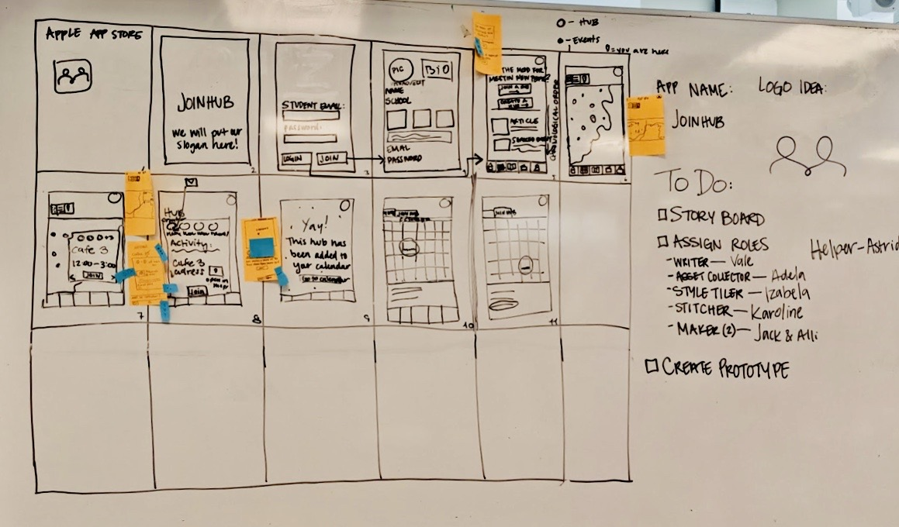

BASIC UX
03.01.01 Data collection
In Basic UX we were introduced to multiple data collection forms such as interview, desk research, surveys and observation research. I used these methods when I made assignment 03.01.01.
I Used desk research to find out how Virtual reality affects elderly people. The reason it was desk research was that I had no prior knowledge about the subject and therefore was it the right way to research it. I collected all my knowledge on the internet, but I could just as well have gotten to the library.
Observation research is a method where you look at how someone or something reacts and behaves. The environment around the subject can have an impact on the reactions, so one should also focus on that. For the assignment I chose to observe my sister while she was in the middle of a design process. She was sitting at a large messy table, filled with drawings and magazines for inspiration. She was drawing bags inspired by different shapes while listening to music with her headphones on. She was very focused, just like the other person in the room.
Interview research is a method where you have a conversation with a person based on beforehand prepared questions. There is both a formal and an informal way to do interviews. For the assignment I Interviewed my sister. It was an informal interview, since we were in my bed and she feels comfortable there. I had prepared some questions, but I also followed the conversation and made up some questions during our talk. We talked about social media and I discovered that she spends less time on social media than I thought. I learned what she uses the different social media platforms for; Facebook for work, messenger for communication with friends and Instagram to scroll and find inspiration.
When you make a survey, you have to create a questionnaire that will be send out to a specific group of people to answer. The best way to do it is to start with the demographic questions and wait with the more difficult and personal questions to further down in the questionnaire. It is important to be clear about how the test subjects are supposed to answer.
For the assignment I was researching the challenges of learning Danish and how good international students are at speaking the language. I learned that 87,5% of the test persons have planned on learning or improving their Danish while staying in the country. There was only one who answered no to that. Most of the people who wanted to improve planned on doing it with a Danish course. I also learned why people might not want to learn Danish. Most people answered that it is rather easy to get by in Denmark without speaking Danish, since most Danes speak English.
See our data collection assignment here.
03.03.01 Prototype
In basic UX we learned what micro copy and copywriting is. Microcopy is there to instruct, motivate and give feedback to the user. Copy is all the written text that is found on a website such as information, instruction and entertainment – and it can all be branding. In the 03.03.01 prototype assignment we used copy to indicate were the user should click – for instance it is instructing the user how to make a profile on the page.
We used copy on the front page as a welcome text to the website explaining what the website is for and how to use it. Under every image on the front page there is also copy persuading the user to click on the images and seeing the content.
For the assignment we made some desk research to find out what the design conventions are for similar websites. We found that it was mostly on accommodation sites that there was a consistent design; they used the color orange; the search filter was placed to the left and the filter tends to be quite long.
Wireflows were introduced, and we learned that it is a combination of wireframe and flowcharts – showing what happens when the user clicks on specific items on the website and how the site is correlates. In the assignment we made a wireflow of how you create an account on the website.
We learned about webform design and how the goal is always completion. The layout of the webform is important for the user and that it should be easy to go through the form.
We were introduced to two different user tests; the 5 sec test and the think aloud test. The 5 sec test is where you show a specific page on the website for 5 secs to a test subject and immediately after you give them questions about the page (max 5 questions). The answers for the questions are the test persons immediate thoughts and it gets clear what is noticeable and what is not on the page.
The Think Aloud test the test subject is using the website while constantly thinking aloud. For the assignment we used the current thinking aloud test and we tested 5 people. All of the test subjects managed to answer every question whether it’d been a question or an action. We found out that we had some problems with the sign-up form. The test people found it unnecessary to type in their gender, so we removed that option. Furthermore, we added some icons, an asterix and a question mark that are clickable to explain why the questions are asked. We planned on adding one more box, so the password has to be typed twice and a sign that shows that they are the same.
03.04.01 Design sprint
A design sprint is a time-constrained, five-phased process where you have one task per day and in the end, you should have a working prototype of your product. The smart thing about it being time-constrained to only 5 days is, that you very quickly can see if the product works or not before making the real product.
On day one we started brainstorming and we found our long-term goal: Help integrate students and teachers into Copenhagen society. The idea was to engage international students in the community, and thereby get friends.
Day two went with making ‘crazy 8’s’ where we all had to make 8 different drawings on a piece of paper in 4 minutes. We compared our drawings, explained them and rated them. The drawing of a map a ticket page confirming events and an announcement of spontaneously meet-ups were rated the highest.
On day three we had to sketch the drawings we liked the best on details. Again, we had to vote to find the best ones. The map idea was very popular and so was the spontaneous pop-up meeting. After this, we started making our storyboard. We chose the pieces with most votes and pieced together the app. We started with the opening page and then we used the ideas from the sketches from then. We came up with the name ‘Joinhub’ and called the spontaneous meetings ‘Hubs’.
Day four was for prototyping. We made a wireframe in low-fidelity and after we had collected the necessary assets, we made it high-fidelity.
On the fifth and final day we had to test our prototype. We used the think aloud test and after talking with our test subjects we found out that the map page was too confusing. We added a small pop-up message when you open the map. We added the app’s name under the logo, since it wasn’t clear that it was a logo. We also added a ‘glow’ effect to navigation bar to make it clear what page is active.
See our prototype for the Design Sprint here.